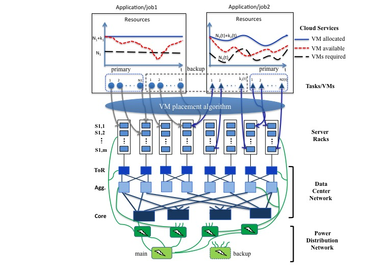

Collaborative Research: An Analytic Approach to Quantifying Availability (AQUA) for Cloud Resource Provisioning and Allocation
Cloud computing will significantly transform the landscape of the IT industry and also impact the economy and society in many ways. The availability of cloud services, affected by various failures including inaccessibility of cloud resources, becomes increasingly more critical, as government agencies, business and people are expected to rely more and more on these services. According to a 2011 report by Emerson Network Power, on average, a service outage lasts about 134 minutes, and these service outages cost about $426 billion of loss worldwide. Additionally, 2012 global survey found that availability/reliability of cloud applications was cited by 67% of those surveyed as one of the top challenges for preventing a successful implementation of cloud services, followed by device based security (66%) and cloud application performance (60%).
In order to cost-effectively provide a desired level of availability (e.g., 99%) for an application requiring say N VMs, an Infrastructure-as-a-Service (IaaS) provider needs a middleware to determine the minimum number of backup VMs, say K, to be provisioned, and in addition, how these (N+K) are placed (or mapped) to the servers, as well as other servers and VM management strategies (e.g., when to power-on servers with the backup VMs etc.). In turn, the middleware needs an efficient model to predict the availability that can be achieved for a given N, K and other system settings. In particular, the middleware will need a comprehensive knowledge of the failure characteristics of the physical components such as servers and switches including their mean-time-between-failure (MTBF) and mean-time-to-repair (or replacement) (MTTR) and in particular, how the failures may be correlated temporally and spatially.
Despite a body of recent work on reporting/characterizing failures in datacenters, there still lacks a comprehensive and publicly accessible failure data set for use by researchers in academia/universities. In addition, although there exist some heuristics to qualitatively improve availability using e.g., triple duplication, and methods to measure the availability in a post-priori fashion, to the best of our knowledge, there exists no quantitative tools, including analytic models, to accurately predict the availability, let alone any methods to determine the optimal VM provisioning and allocation (placement) to achieve a given availability level.
This project will take a holistic approach to meeting a required availability level for a given cloud application or (service) by

The above illustrates the overall system model to be considered in this project. As shown, we will consider two types of applications/jobs
In either case, multiple backup VMs (e.g., K1 > 1) may be needed to meet the availability requirement of a given application/job. This is due to the fact that when a virtualized server fails, multiple VMs placed on the server will all fail. It is also worth noting that even at the server levels, failures (or non-accessibility) may be correlated both temporally and spatially.